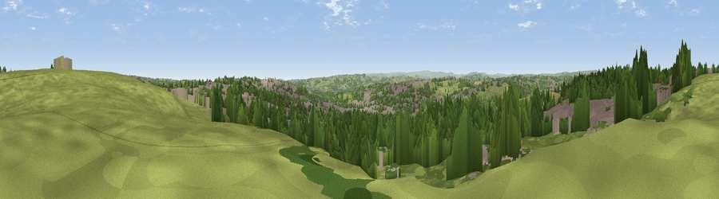

Viewpoint near Little Gomersal
#19066 in England · top 26% of its area beats it · near Little GomersalThe view, rendered

A 360° render of this exact spot computed from the terrain model, tree cover and land cover — summer colours, afternoon light, calibrated against photographs of famous viewpoints. Real trees, hedges and buildings will differ in detail.
The panorama
Grey silhouette: terrain skyline in each direction (720 bearings, Earth curvature and refraction included). Dashed green: skyline with trees (+15 m) and buildings (+8 m) as obstacles. Blue strip: how far the ground is visible on each bearing.
Where the view opens
Wedge length = distance to the farthest visible ground on that bearing (vegetation-aware). Rings at 10, 25 and 50 km.
What fills the view
38% grassland · 34% woodland · 26% built-up · 2% cropland
Angular shares of the visible panorama (visual magnitude), not map area. Landscape diversity 0.51 (0–1 Shannon).
Key numbers
More beautiful places nearby
The staircase of upgrades: each row has a higher view potential than everything closer. Driving times are estimates from straight-line distance, calibrated against real road routing — check an actual route before setting out.
| Place | Direction | Drive | Score |
|---|---|---|---|
| Viewpoint near Birstall | NE · 1 km | ~2 min | 54.2 |
| Viewpoint near Heckmondwike | SE · 2 km | ~6 min | 57.6 |
| Viewpoint near Hartshead | SW · 3 km | ~8 min | 58.8 |
| Viewpoint near Woodkirk | E · 5 km | ~11 min | 62.1 |
| Viewpoint near Upper Hopton | SSW · 7 km | ~14 min | 63.3 |
| Viewpoint near Kirkheaton | SSW · 7 km | ~14 min | 68.0 |
| Viewpoint near Grange Moor | S · 9 km | ~18 min | 69.8 |
| Castle Hill | SSW · 12 km | ~23 min | 70.2 |
53.72031, -1.68060 · source: screening · position refined by local search. Computed location — check access rights before visiting.